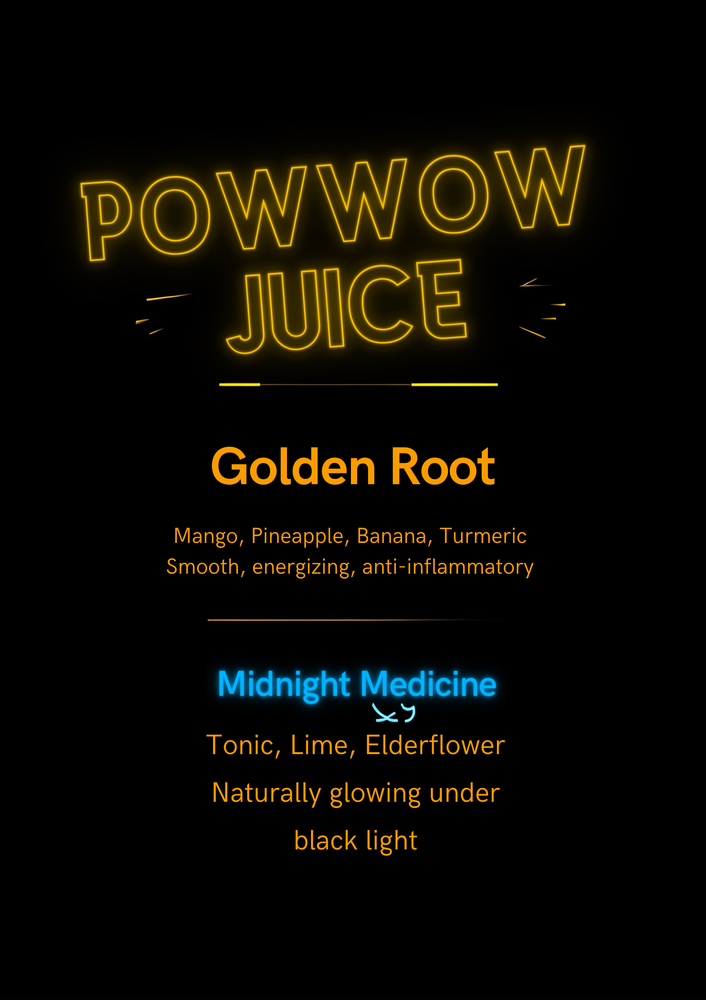
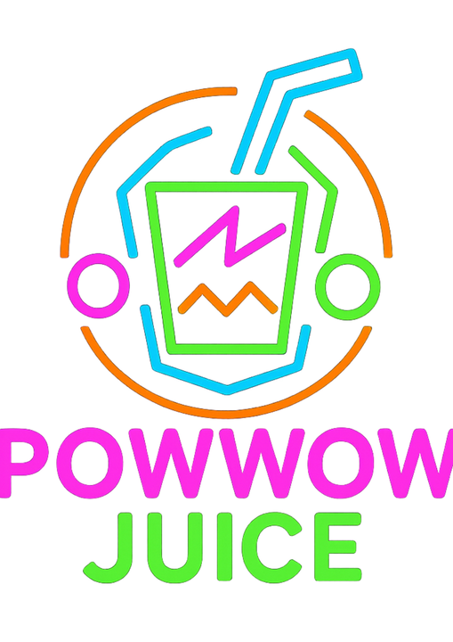

Powwow Juice was launched as a live pop-up beverage concept on New Year’s Eve to test product viability, operations, and customer demand in a real-world event environment.
The launch was designed and executed end-to-end, including concept development, supplier sourcing, pricing strategy, operations planning, and on-site execution. The pop-up introduced two functional, alcohol-free juice shots—Golden Root and Midnight Medicine—selected intentionally to minimize operational complexity while maximizing throughput and consistency. This constrained MVP approach allowed for efficient service, cost control, and rapid customer feedback. The event validated market interest, pricing tolerance, and operational feasibility while operating within tight timelines and resource constraints.
Key learnings included demand forecasting, inventory management, live service workflow, and the effectiveness of a simplified menu for pop-up scalability. This inaugural launch established Powwow Juice as a flexible, event-based wellness brand with clear potential for expansion into full-service pop-ups, partnerships with venues, and culturally rooted community activations in 2026.

